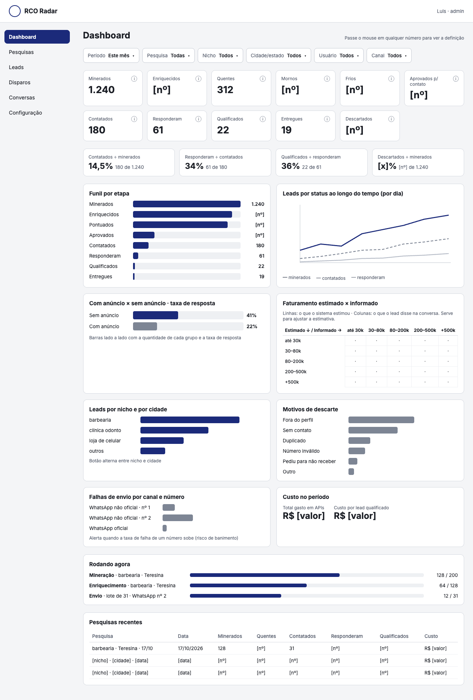
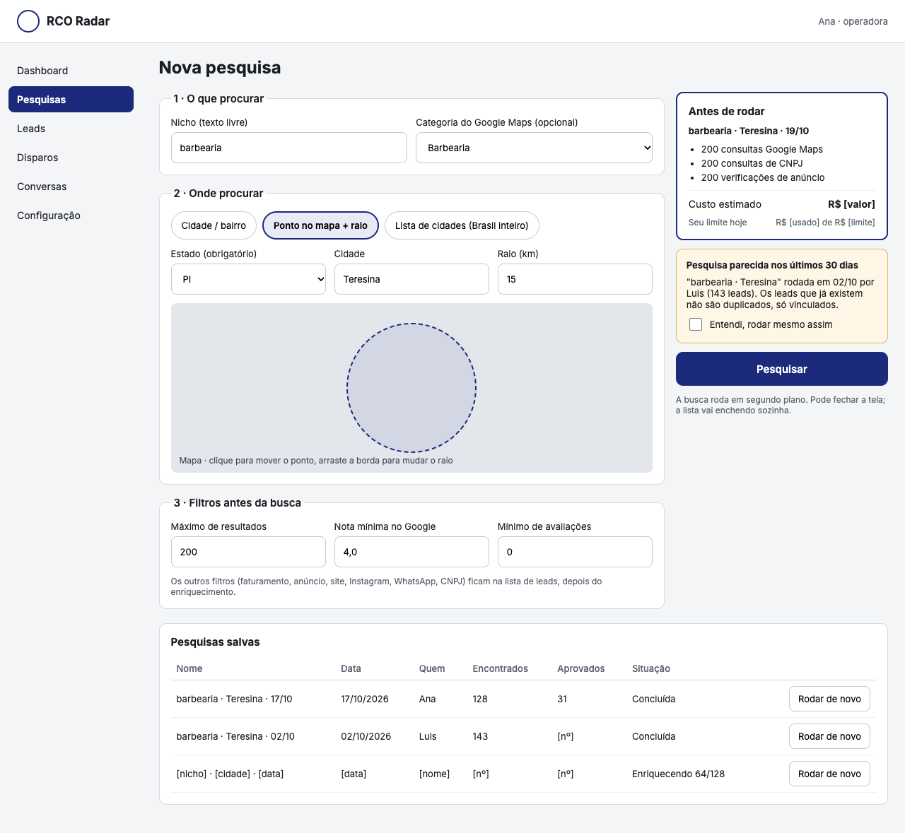
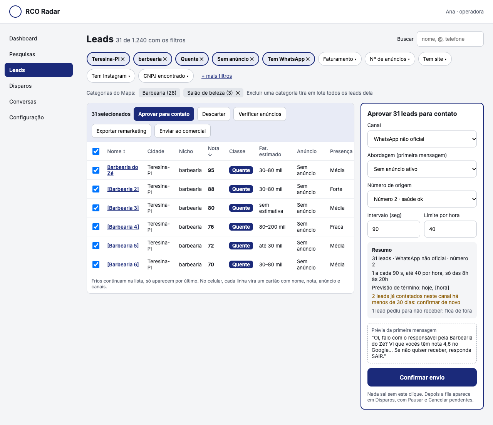
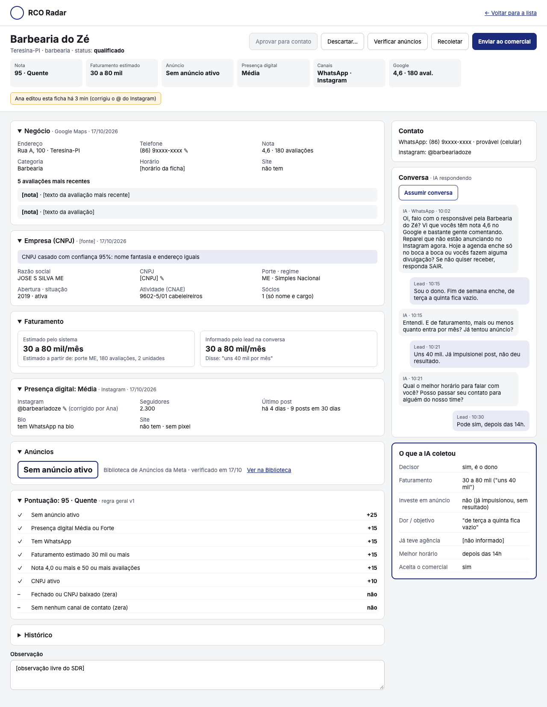

| O que descobrimos | O que significa na prática | Nossa proposta |
|---|---|---|
| MUDA O PEDIDO O Instagram não deixa uma empresa mandar a primeira mensagem pelo caminho oficial. |
Pelo caminho oficial, a conta só pode responder quem escreveu antes. Mandar DM fria exige automação não oficial, que derruba conta com facilidade, como o próprio levantamento já alertou. | LUIS DECIDE Tirar a DM fria da v1. O Instagram serve para pesquisar o lead e para responder quem chamar. O primeiro contato fica no WhatsApp. |
| MUDA O PEDIDO O WhatsApp oficial cobra R$ 0,32 por mensagem de prospecção e só aceita texto aprovado pela Meta. |
A primeira mensagem fica "engessada" e custa mais que a conversa inteira da IA. O não oficial é grátis por mensagem, mas o número pode ser banido. | RECOMENDADO Começar pelo não oficial, com números próprios do Radar, limites baixos e rodízio. Oficial como segunda opção. |
| MUDA O PEDIDO A Meta não mostra anúncios brasileiros pela via oficial. O Google proíbe guardar a lista de negócios. |
"Tem anúncio ativo" só sai por coleta da página pública, como o levantamento previu. Pelo Google oficial, não podemos montar nossa base de leads. | RECOMENDADO Usar provedores de coleta nas duas fontes, com troca rápida de provedor se um parar. |
A tela nunca fica "carregando" esperando uma busca. O usuário pede, o pedido entra numa fila e robôs trabalham em segundo plano. Dá para fechar a tela e voltar depois.
No computador e no celular. Pesquisa, lista, ficha e dashboard. Mesmo login do sistema comercial.
O mesmo que já usamos. O Radar fica numa área própria, sem misturar com o comercial.
Cada busca, verificação e envio vira uma tarefa. Se uma falhar, o sistema tenta de novo sozinho, sem travar o lead.
Google Maps, CNPJ, site, Instagram, anúncios da Meta. Cada fonte é uma "peça" trocável.
WhatsApp (números próprios do Radar) e IA. Nada sai sem o clique de confirmação de uma pessoa.
Lead qualificado sai para o Frankenstein com a conversa completa. Na v1, por envio automático (webhook) ou planilha.
Como o Radar fica no mesmo banco do sistema comercial, ligar os dois depois fica bem mais simples, seja qual for o formato escolhido.
Custo para cada 1.000 leads, com dólar a R$ 5,04 (19/10/2026). Preços pesquisados nos sites dos fornecedores em 19/10.
| Dado | Fonte escolhida | por 1.000 leads | Observação |
|---|---|---|---|
| Negócios do Maps (nome, telefone, nota, 5 avaliações) | Provedor de coleta (Apify). Reserva: Google oficial | R$ 26 a 40 | O Google oficial sai parecido (R$ 20 a 30), mas proíbe guardar a lista. Escolher o provedor de coleta. |
| CNPJ (porte, sócios, abertura) | Casa dos Dados (busca por nome + cidade) | ≈ R$ 10 | Preço a confirmar na contratação. Alternativa grátis: base própria da Receita, que dá mais trabalho para montar. |
| Instagram (seguidores, posts, bio) | Provedor de coleta (Apify) | R$ 8 a 13 | Pode ser bloqueado. Nesse caso o campo fica "não verificado" e o lead segue. |
| Site (pixel, WhatsApp, plataforma) | Nosso próprio robô | R$ 0 | Já está pronto e testado. |
| Anúncios ativos (Meta) | Provedor de coleta (Apify) | ≈ R$ 19 | Só verifica quando alguém pede ou antes de um disparo, nunca todo dia. |
| Total para minerar e enriquecer 1.000 leads | R$ 65 a 85 | Menos que isso na prática: só lead que passa no filtro inicial é enriquecido. | |
Conta feita com o funil do exemplo do levantamento: 1.240 minerados → 180 contatados → 61 responderam → 22 qualificados.
| Com WhatsApp não oficial | R$ |
|---|---|
| Minerar e enriquecer 1.240 leads | ≈ 105 |
| 180 primeiras mensagens | 0 |
| 61 conversas com IA (Claude Haiku) | ≈ 2 |
| Por lead qualificado (÷ 22) | ≈ 5 |
| Com WhatsApp oficial | R$ |
|---|---|
| Minerar e enriquecer 1.240 leads | ≈ 105 |
| 180 primeiras mensagens × R$ 0,32 | ≈ 58 |
| 61 conversas com IA (Claude Haiku) | ≈ 2 |
| Por lead qualificado (÷ 22) | ≈ 7,50 |
O desenvolvimento é feito com agentes de IA trabalhando em frentes paralelas, e a Fase 3 reaproveita o que já funciona no CRM da RCO (WhatsApp e agente de IA). As tarefas entram no ClickUp depois deste debate.
Feita em paralelo à Fase 1, por outra frente.
| Risco | Como tratamos |
|---|---|
| Fonte do Maps parar ou mudar | Cada fonte é uma peça trocável. Se o provedor de coleta cair, passamos para o Google oficial ou outro provedor sem refazer o sistema. |
| Casar o negócio com o CNPJ errado | Nota de confiança visível na ficha ("95%: nome e endereço iguais"). Abaixo de 50%, não assume. Empate vai para revisão humana. Esperamos acertar entre 40% e 60% dos negócios, porque muitos são MEI ou não usam o nome no CNPJ. |
| Anúncios só por coleta da página pública | Verifica só quando pedido ou antes de disparar. Se não achar a página, fica "não verificado" e o lead não ganha pontos por isso. |
| Instagram bloquear a coleta | Limite por hora. Se bloquear, o campo fica "não verificado" e o lead segue. A pessoa pode corrigir o @ na ficha. |
| Número de WhatsApp banido | Números próprios do Radar, separados dos clientes. Rodízio, limites baixos de início (20 por hora, 60 por dia), aquecimento de número novo, envio só das 8h às 20h e alerta quando as falhas sobem. |
| WhatsApp oficial exige texto aprovado | As 3 abordagens viram modelos para a Meta aprovar, o que costuma levar de horas a poucos dias. Só depois o canal oficial libera. |
| LGPD e reclamação de lead | Toda primeira mensagem tem "se não quiser receber, responda SAIR". Quem pede para sair entra numa lista de bloqueio respeitada em envio e exportação. Isso é garantido pelo sistema, não depende da IA. |
| Custo da IA | Claude Haiku ≈ R$ 0,02 por conversa. Não é o que pesa no orçamento. |
Preços consultados nos sites dos fornecedores em 19/10/2026 e sujeitos a mudança. "A confirmar" indica valor que só se fecha na contratação.

1 · Dashboard. Os números da prospecção, as taxas, o funil e os gráficos pedidos. Cada número explica o que conta ao passar o mouse.

2 · Pesquisa. Nicho, lugar e filtros. O custo aparece antes de rodar, com aviso se a mesma pesquisa foi feita nos últimos 30 dias.

3 · Lista de leads. Filtros, seleção em lote e o painel de disparo. Nada sai sem o "Confirmar envio".

4 · Ficha do lead. Tudo sobre o negócio, com fonte e data, a conta da nota, a conversa da IA e o que ela coletou.